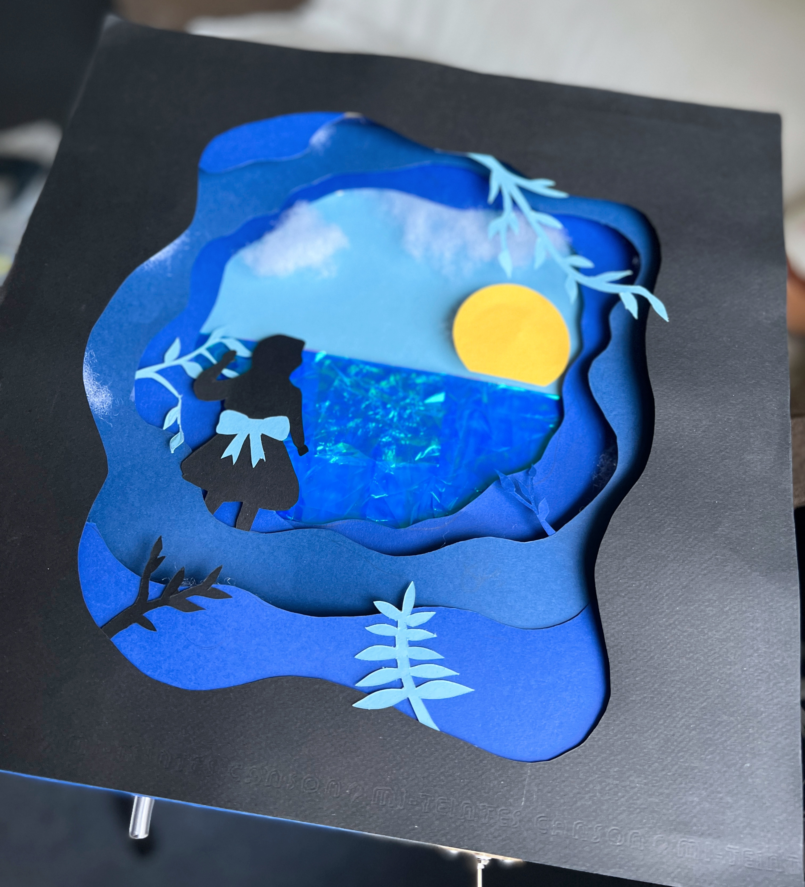

Alice in Serendipity
a Sound-Responsive LED Paper Craft Design

Alice in Serendipity is a paper craft design that responds to sound input, including the human voice or music. The project is inspired by Alice In Wonderland and the MV photo of Serendipity by Jimin of BTS.
Technical Details
The surface design is realized with flexible materials and embedded electronics operated by Micro-Python programming. The project includes the use of Circuit Playground Express (CPX), 11 LEDs, a toggle switch, and a potentiometer. Pulse Width Modulation is employed to adjust the output level from the actuators (LEDs). It is a stand-alone system that does not need to be connected to an external power source or computing device. The surface design of paper craft present unique aesthetic enhanced by ripple effects created by 4 groups of LEDs.
The design is enhanced by 4 groups of LED lights to create ripple effect that form layers and symbolize Alice walking into the cave. The LED lights built in cave layers also help to create silhouettes of vines, leaves, and trees. All the LED lights use cotton to diffuse the light ray to make it softer and create a serene atmosphere in the cave / forest. Another LED light built under the sun creates light rays emitted by the sun. The light ray also helps to create light on the ocean made of cellophane and plastic blue pvc materials.
My Work Process
A video demo can be found here!